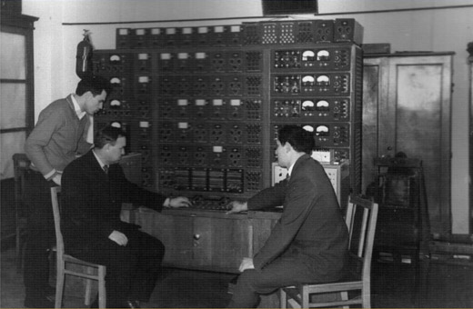
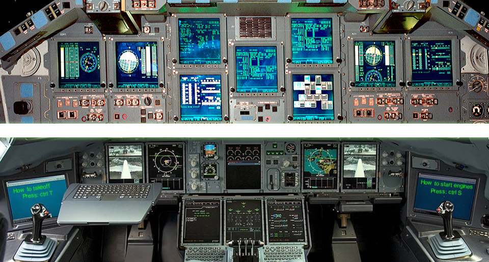

Создание в 1959 году в Харьковском авиационном институте факультета радиотехнических систем (РТСЛА) было не капризом изменчивой фортуны, а объективной закономерностью. Конкуренция в производстве летательных аппаратов, ракетных и космических систем потребовало комплексного подхода к созданию таких конструкций, электронный компонент перестал быть несвойственной частью летающего металла. С другой стороны, динамика полета опережает физиологические возможности самых искусных пилотов, операторов, навигаторов. Электронные устройства избавили человека от рутинной работы, предоставив ему роль стратега, а не биологического придатка педалей, рычагов, тумблеров, регуляторов, индикаторов. Но это – прошлые достижения.

Cпустя более 50 лет со дня образования факультета, все перечисленные обоснования не только не утратили своего значения, а подтвердили верность принятых решений. Несмотря на все трудности, жесткую конкуренцию, Украина имеет реальные шансы занять достойное место в мировом производстве авиационной и космической техники нового поколения, компьютерных, радиоэлектронных, радиотехнических и телекоммуникационных систем, авиационных и космических геоинформационных средств мониторинга, аппаратов и устройств космической и наземной медицины, специализированных высокопроизводительных интеллектуальных вычислительных комплексов.
Специалистов, владеющих знаниями в областях электроники, компьютерных технологий, современной цифровой и аналоговой схемотехники, защиты информации, свободно владеющих иностранными языками, обладающих научной, творческой и деловой инициативой уже не просто ожидает, а требует экономическое будущее не только нашей страны, но всего мирового сообщества.

Поэтому, уважаемые прагматики и романтики, фанатики-компьютерщики и радиолюбители, и просто молодые люди, серьезно относящиеся к своему будущему, Вас ожидают настоящие профессионалы – 25 профессоров, 48 доцентов, 22 высококвалифицированных преподавателя радиотехнического факультета для того, чтобы передать свои знания, умения и навыки. Успешно обучаясь, через четыре года, Вы станете бакалаврами, а продолжив обучение – магистрами по следующим направлениям и специальностям (специальности магистерской подготовки указаны в скобках).
Радиоэлектронные аппараты (Радиоэлектронные аппараты и средства, специализации – Биотехнические и медицинские аппараты и системы, Электронная бытовая аппаратура) – подготовка специалистов по компьютерным технологиям проектирования, конструирования и производства электронных средств различных принципов функционирования и назначения, включая, радиоэлектронные аэрокосмические, навигационные, медицинские аппараты, электронную бытовую технику, а также все перечисленные ниже системы и комплексы.
Радиотехника (Радиоэлектронные устройства, системы и комплексы) – спутниковые и аэрокосмические радиотехнические системы навигации и управления подвижными объектами, дистанционные комплексы определения характеристик земной поверхности и поверхностей космических объектов, компьютеризированные устройства отображения информации в диагностической аппаратуре различного применения.
Телекоммуникации (Телекоммуникационные системы и сети, Технологии и средства телекоммуникаций) - обеспечивают радиофизическое обоснование, информационное обеспечение, проектирование и практическую реализацию, эксплуатацию цифровых и аналоговых систем связи наземного и космического базирования.
Компьютерная инженерия (Компьютерные системы и сети, Системное программирование, Специализированные компьютерные системы) – это безпроводные и мобильные компьютерные сети, защита информации и безопасность компьютеризованных комплексов, разработка и развитие корпоративных сетевых решений; WEB-технологии и сервис – ориентированные системы, компьютерный дизайн и анимация, верификация, экспертиза и сертификация программных систем, технологии и системы распределенной обработки данных; микроконтроллеры и сенсорные сети, гарантоспособные компьютерные системы и инфраструктуры, встроенные программные дополнения и технологии «система на кристалле», мультимедийные компьютерные системы и технологии.
Созвучны перечисленным направлениям бакалаврской и специальностям магистерской подготовок и названия выпускающих кафедр факультета:
Фундаментальную подготовку будущих специалистов для всего университета проводит кафедра физики (505).
Возглавляют кафедры доктора технических наук, ведущие активную научно-исследовательскую деятельность.
По актуальным научным проблемам на факультете осуществляется подготовка лучших выпускников в аспирантуре.
Отдавая должное исторически сложившемуся названию факультета, сегодня по сути это факультет Радиоэлектонных
компьютерных систем и телекоммуникаций, но с неизменным и значимым порядковым номером 5. Сомневающихся,
интересующихся и любознательных приглашаем посетить наши Интернет страницы на https://rtsla.khai.edu.
Уважаемый абитуриент, помни! Самолет – это не только планер и двигатели, а и 3-4 миллиона электрорадиоэлементов,
объединенных в узлы управления, контроля, телекоммуникаций, бортовые ЭВМ и системы жизнеобеспечения.
Стань полноправным хозяином своей судьбы, став специалистом ХХI века, поступив на факультет РТСЛА!